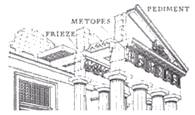

When Perikles planned a large-scale construction programme for Acropolis (447/446 BC) he placed Pheidias in charge of the whole architectural and sculptural undertaking. Pheidias was an artist and sculptor from Athens. He created the colossal statue of Zeus at Olympia, one of the Seven Wonders of the Ancient World. The outstanding feature of the Acropolis was the Temple of Athena Parthenos (the Maiden) - or, the Parthenon.
The ParthenonIt was designed by the architect Iktinos and constructed by the master-builder Kallikrates. It was of the Doric order with some variations and refinements
The sculptures are too numerous and varied to be the work of Phidias alone. The project probably needed around 70 or 80 sculptors. 
MetopesThese were set in the outer colonnade of the temple. They are in high relief. They show 'Greek' victories - eg the Lapiths fighting the Centaurs.
FriezThe frieze was on the external wall of the inside 'chamber' of the Parthenon. It is in shallow relief. It depicts a procession culminating in a reception committee of Olympian gods. A small group hand over the sacred robe given to Athena's statue at the Great Panathenaic festival.
The Acropolis and ParthenonWhen Perikles planned a large-scale construction programme for Acropolis (447/446 BC) he placed Pheidias in charge of the whole architectural and sculptural undertaking. Pheidias was an artist and sculptor from Athens. He created the colossal statue of Zeus at Olympia, one of the Seven Wonders of the Ancient World. The outstanding feature of the Acropolis was the Temple of Athena Parthenos (the Maiden) - or, the Parthenon.
Other buildings of the Acropolis were the Propylaea, the Temple of Athena Nike and the Erechtheion.
PropylaeaThis was the entrance way to the main buildings of the Acropolis. It was an impressive building in itself.
Temple of Athena NikeThis was the entrance way to the main buildings of the Acropolis. It was an impressive building in itself.